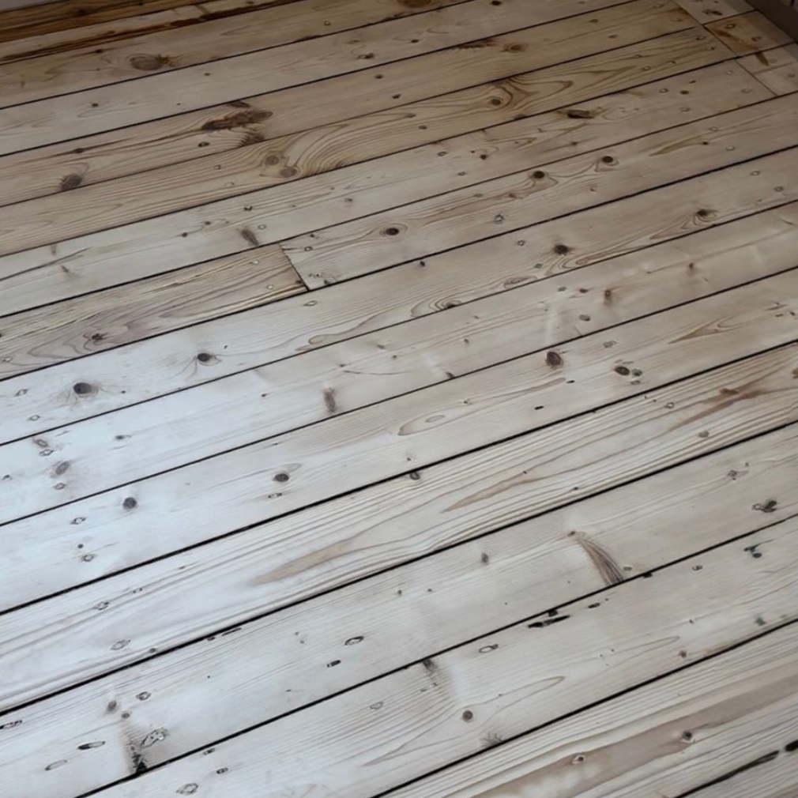
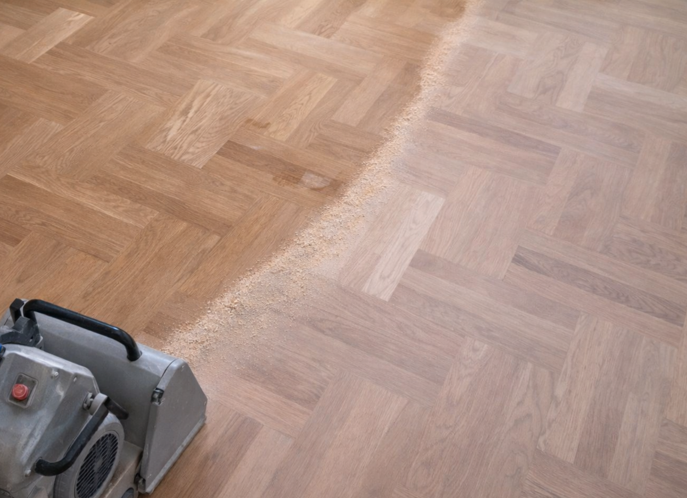
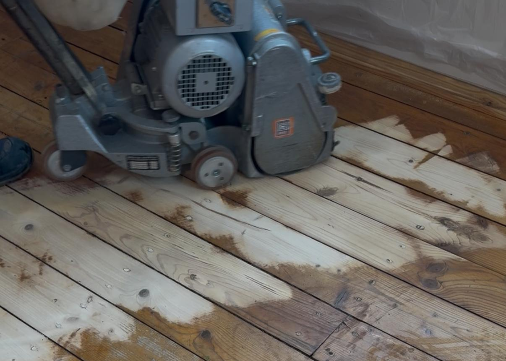
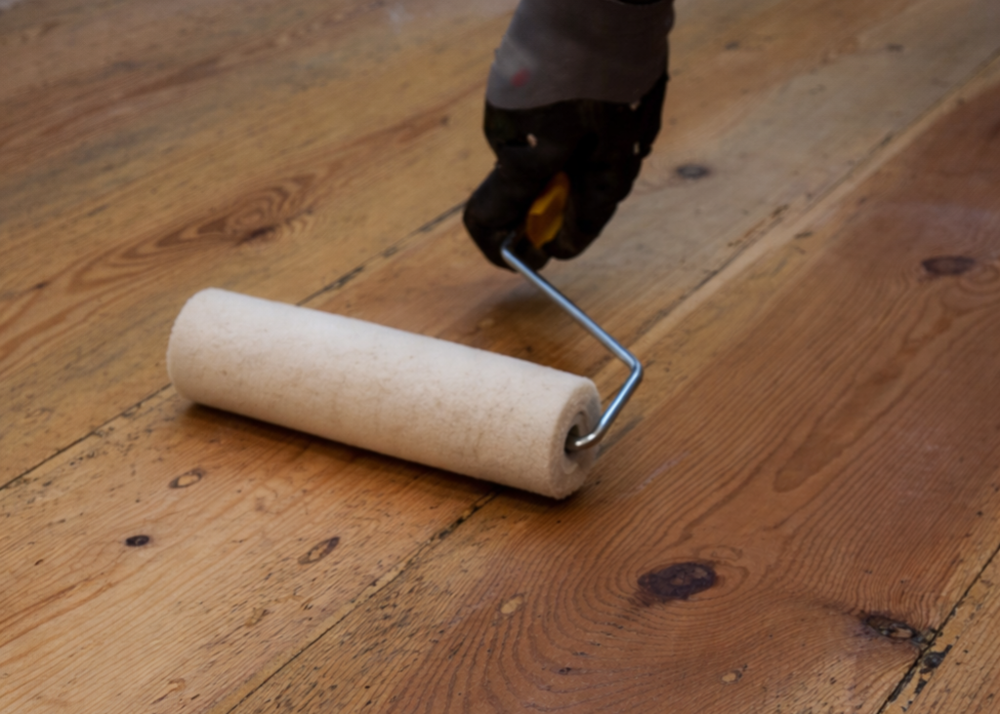
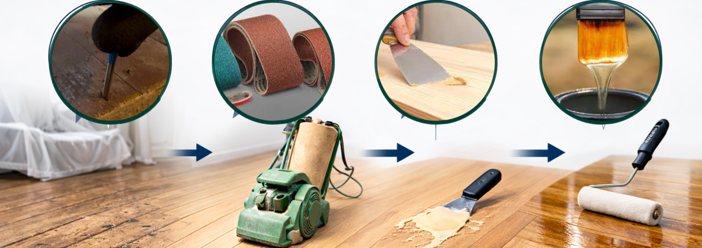
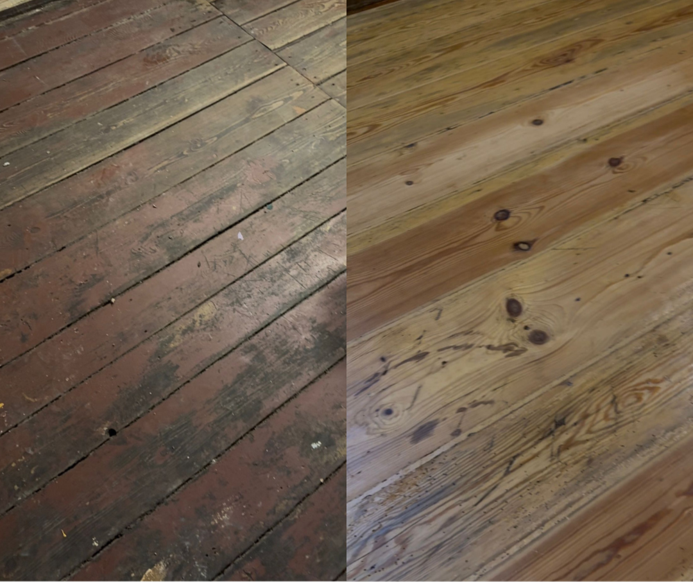
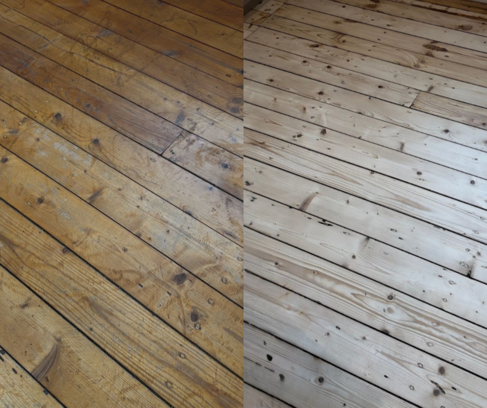
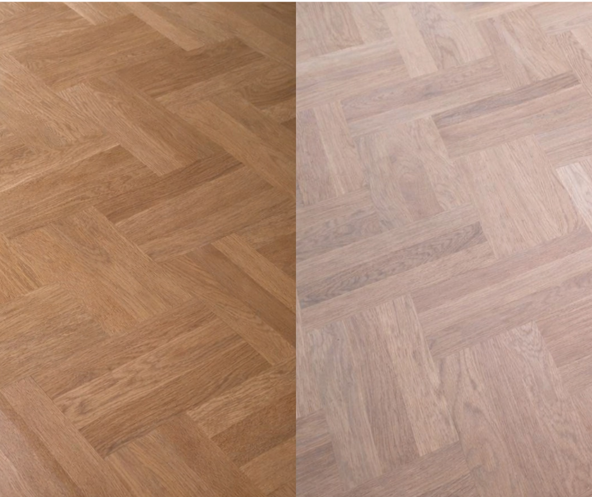

GR Production • Koka grīdu atjaunošana
Dēļu un parketa grīdu slīpēšana
Atjaunojam koka grīdas: noņemam veco laku/krāsu, izlīdzinām virsmu, špaktelējam un uzklājam jaunu apdari (laka vai eļļa). Strādājam ar putekļu savākšanu, lai telpa būtu tīrāka.
Putekļu savākšana
Pirms / Pēc
Laka vai eļļa

Dzīvokļi / Mājas
Biroji
Komerctelpas
Ko tieši darām
Pakalpojums ir “no A līdz Z”: sagatavošana, slīpēšana, spraugu remonts un apdares uzklāšana. Zemāk — galvenie virzieni īsi un saprotami.
Parketa slīpēšana
Atjaunojam parketu, noņemot veco laku un skrāpējumus, izlīdzinām virsmu un sagatavojam apdarei.
- Vienmērīga virsma vairākos graudos
- Špaktelēšana (pēc vajadzības)
- Lakošana / eļļošana

Dēļu grīdu slīpēšana
Dēļu grīdas bieži ļauj dziļāku atjaunošanu. Noņemam krāsu/laku, izlīdzinām un atjaunojam izskatu.
- Vecā slāņa noņemšana (arī krāsa)
- Spraugu aizpildīšana un remonts
- Tonējums (pēc vienošanās)

Apdare: laka vai eļļa
Izvēlamies apdari pēc slodzes un vēlamā izskata. Laka ir ļoti praktiska, bet eļļa ir dabīgāka pēc izskata.
- Matēta / satīna / spīdīga laka
- Eļļa – izceļ koka faktūru
- Apdares sistēma pēc telpas

Gribi cenu piedāvājumu?
Atsūtiet telpas platību (m²), pilsētu un īsu aprakstu — mēs ar jums sazināsimies un sagatavosim piedāvājumu.
Darba gaita
Kvalitatīvs rezultāts rodas no pareizas secības un apdares sistēmas. Tipiska darbu gaita:
1
Sagatavošana
Telpas aizsardzība, stiprinājumu (naglu/skrūvju) pārbaude, defektu izvērtēšana.
2
Slīpēšana
Vecā slāņa noņemšana un virsmas izlīdzināšana vairākos graudos.
3
Špaktelēšana
Spraugu un mikrodefektu aizpildīšana (ja nepieciešams), sagatavošana apdarei.
4
Apdare
Laka vai eļļa (slāņu skaits pēc sistēmas). Žūšanas laiki un telpas nodošana.

Reāli darbu piemēri
Dēļu grīda + spīdīga laka
Pūre • ~15 m² — noņemta vecā laka, izlīdzināta virsma, 3 slāņi spīdīgas lakas.

Dēļu grīda slīpēšana
Jaunpiebalga • ~20 m² — vecā vaska noņemšana no dēļu grīdas.

Perketa slīpēšana + lakošana
Rīga • ~25 m² — vecās lakas noslīpēšana, jaunās lakas uzklāšana.

Biežākie jautājumi
Ātras atbildes, lai vieglāk saprast darbu gaitu un termiņus.
Cik ilgi žūst laka?
Tas atkarīgs no lakas sistēmas, temperatūras un ventilācijas. Parasti staigāt var pēc ~24h,
bet pilna slodze — pēc vairākām dienām.
Vai var slīpēt, ja grīdā ir dziļi bojājumi?
Bieži var, bet jāizvērtē bojājumu dziļums un parketa virskārta (ja tas ir daudzslāņu).
Piedāvājam drošāko risinājumu pēc apskates vai foto.
Laka vai eļļa — ko izvēlēties?
Laka ir ļoti praktiska un izturīga ikdienā. Eļļa izskatās dabīgāk un izceļ koka faktūru,
bet prasa regulārāku kopšanu. Ieteikšu pēc telpas slodzes.
Vai strādājat visā Latvijā?
Jā — izbraucam uz objektiem visā Latvijā. Atsūti atrašanās vietu un m², sagatavosim piedāvājumu.
Gatavs atjaunot grīdu?
Atsūtiet telpas platību (m²), pilsētu un īsu aprakstu — mēs ar jums sazināsimies un sagatavosim piedāvājumu.